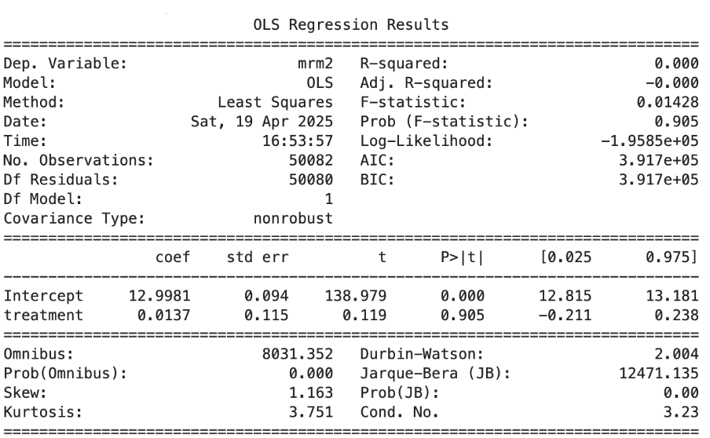
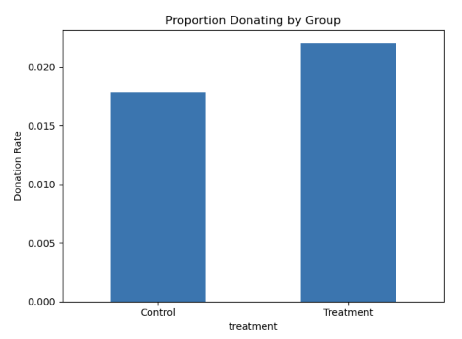
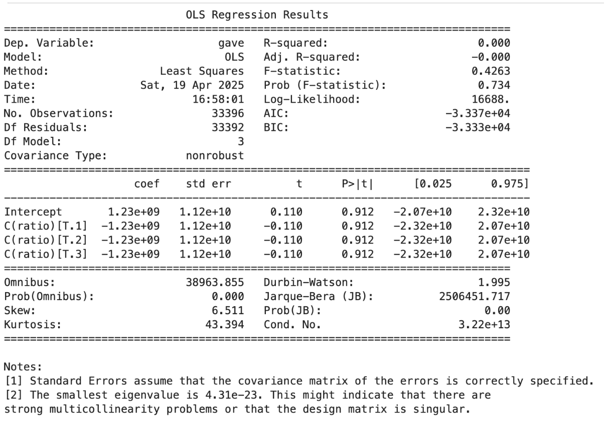
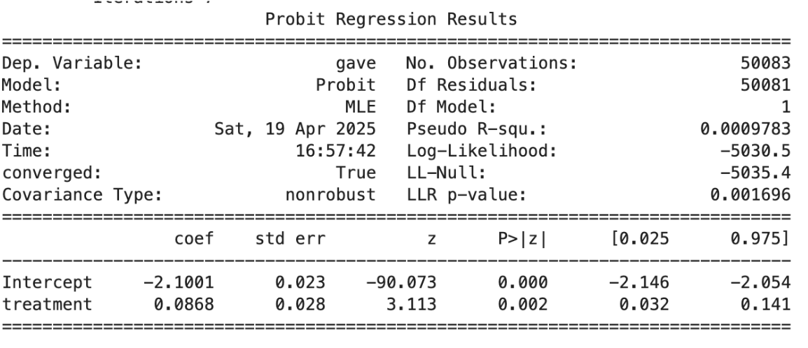
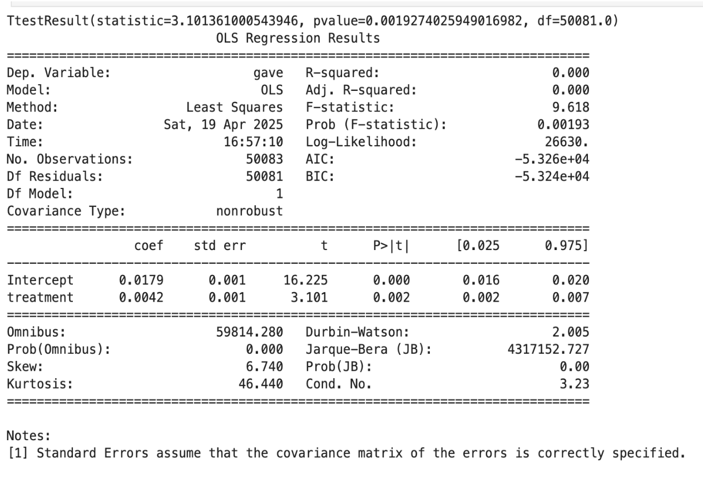
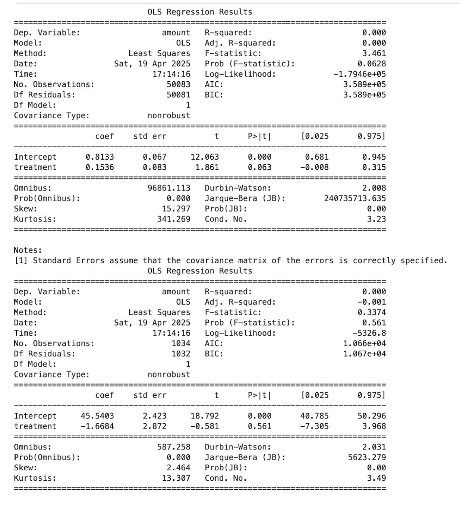
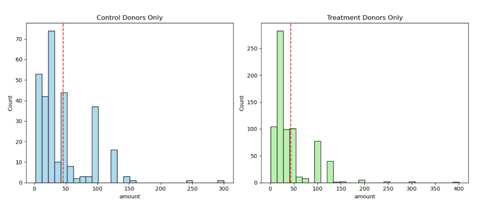
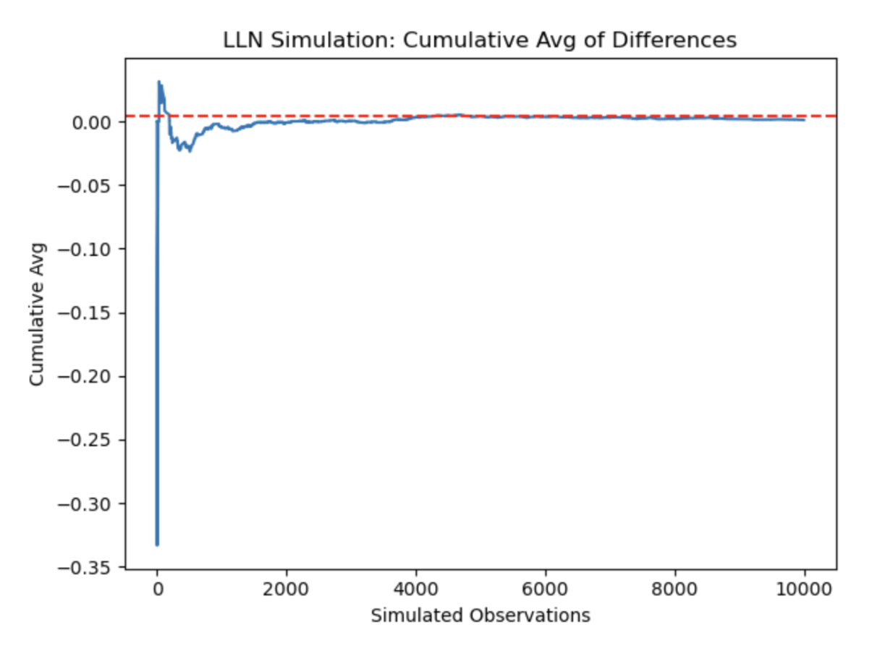
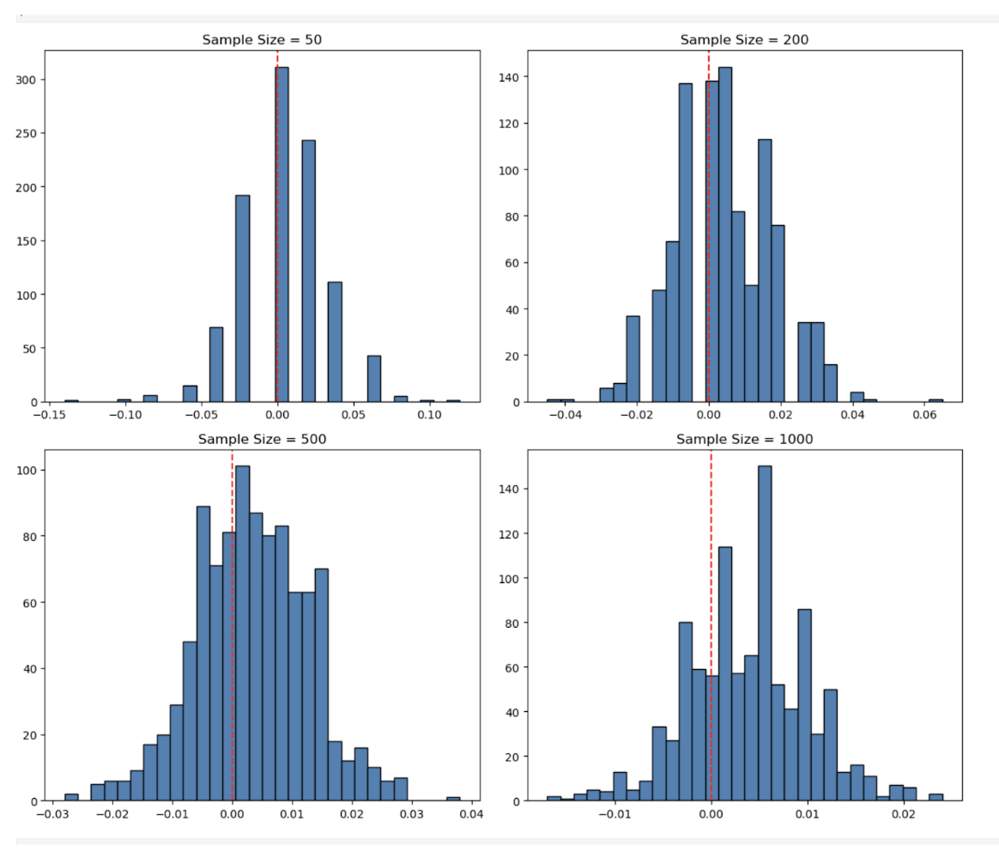

Report: Statistical Replication and Interpretation of Karlan & List (2007)
Introduction
This report provides an in-depth replication and interpretation of the statistical methodologies and findings from the seminal field experiment conducted by Karlan and List (2007), titled “Does Price Matter in Charitable Giving?” The paper examines how matching grant offers influence both the likelihood of charitable donations and the amount given. Our analysis uses the original experimental data to explore the efficacy of various match ratios and donor responses. Through a combination of econometric analysis and simulation, we replicate the key statistical insights and reflect on their implications for fundraising and behavioral economics.
1. Balance Test
Before assessing treatment effects, we evaluate the quality of the randomization by comparing observable characteristics across the treatment and control groups. One key pre-treatment variable analyzed is mrm2, which captures the months since a donor last contributed to the organization.
Methods:
-
We performed a two-sided t-test comparing the means of mrm2 for treatment versus control.
-
Additionally, we conducted a simple linear regression: mrm2 ~ treatment.

Findings:
-
The mean difference in mrm2 was small and statistically insignificant.
-
The OLS regression yielded a near-zero coefficient on the treatment indicator.
Interpretation: This confirms that randomization achieved balance across groups on this important dimension. The lack of statistically significant differences implies that any subsequent differences in outcomes can be attributed to the treatment rather than pre-existing disparities. This is consistent with Table 1 of the original study, which serves as a critical validity check.
2. Effect of Matched Donations on Donation Probability
Visual Analysis:
A bar plot comparing the proportion of individuals who donated in the treatment group versus the control group reveals a clear visual increase in the likelihood of giving when a match offer is present.

Graph Interpretation:
-
The control group has a lower donation rate, confirming that individuals not presented with a matching offer are less inclined to give.
-
The treatment group displays a notable uplift, providing visual affirmation of the intervention’s impact.
Statistical Analysis:
To formally test the effect, we conducted:
-
A two-sample t-test of donation rates (“gave” variable).
-
A linear probability model (OLS regression): gave ~ treatment.
Findings:
-
The t-test yields a statistically significant result, with treatment increasing the probability of giving.
-
The regression coefficient is positive and significant, quantitatively supporting the same conclusion.

Interpretation: These findings underscore the behavioral power of framing. Offering a matching grant, even without specifying the match size, effectively boosts engagement. Donors likely interpret matching as a signal of collective efficacy or organizational credibility, prompting greater participation.
Probit Model:
We also estimate a probit regression of gave ~ treatment, mirroring the approach in Table 3, Column 1.
Interpretation: The probit results confirm that the marginal effect of treatment remains positive and significant even under a non-linear specification. This reinforces the robustness of the main effect and strengthens our confidence in its generalizability.

3. Effect of Match Ratio Size
Pairwise T-tests:
We test whether larger match ratios lead to increased giving by comparing:
-
1:1 vs 2:1
-
2:1 vs 3:1

Findings:
-
No statistically significant differences in response rates are detected between these match conditions.
Regression Analysis:
We estimate a regression: gave ~ C(ratio) to examine if match ratios have a differential effect on giving.
Findings:
-
The coefficients on 2:1 and 3:1 matches are not statistically different from the baseline 1:1 match.
Interpretation: This suggests that the marginal return on increasing the match ratio is effectively zero. The presence of a match appears sufficient to generate psychological salience. Beyond that, larger incentives may not enhance perceived value or urgency. This is a key behavioral insight that challenges traditional economic models of price sensitivity.
Manual Difference Calculations:
Using group means, we directly computed the differences in donation rates:
-
2:1 vs 1:1: negligible
-
3:1 vs 2:1: negligible
Interpretation: These values corroborate our regression findings. They indicate that once the concept of matching is introduced, the specific multiple does not meaningfully alter donor behavior. This implies diminishing psychological returns to increasing match ratios.
4. Donation Amounts
Full Sample Regression:
We regressed total donation amount on treatment status for the entire sample.
Findings:
-
The average donation is slightly higher in the treatment group, though this difference is modest and varies in statistical significance.

Conditional on Donation:
Restricting the sample to individuals who made a donation (gave == 1), we re-estimated the regression.
Findings:
-
No significant difference in average donation size was observed.
Interpretation: The treatment’s effectiveness lies primarily in increasing the participation rate rather than altering the generosity of existing donors. This insight is crucial for organizations aiming to expand their donor base.
Histograms:
We plotted donation amounts for donors in treatment and control groups.

Graph Interpretation:
-
Both distributions are right-skewed, reflecting a typical long-tail pattern in giving.
-
The sample means, indicated by vertical lines, are nearly identical.
Interpretation: These plots visually confirm that conditional giving behavior remains stable across groups. Behavioral change occurs primarily at the extensive margin (whether to give) rather than the intensive margin (how much to give).
5. Simulation Analysis
Law of Large Numbers (LLN):
We simulated 10,000 draws from control (p = 0.018) and treatment (p = 0.022) distributions and plotted the cumulative mean difference.

Graph Interpretation:
-
The cumulative average converges to the true population difference of 0.004.
-
This convergence illustrates the principle that sample means become reliable with sufficient data.
Interpretation: This simulation reinforces the trustworthiness of experimental outcomes derived from large samples. The LLN ensures that our results are not driven by chance.
Central Limit Theorem (CLT):
We simulated distributions of sample mean differences at sizes 50, 200, 500, and 1000.

Graph Interpretation:
-
As the sample size increases, the sampling distribution becomes more concentrated and bell-shaped.
-
The distributions center around the expected value (0.004), and their variance decreases.
Interpretation: This exercise demonstrates the CLT in action, underscoring the role of sample size in determining statistical power and inference reliability. It justifies the paper’s use of large-scale field experimentation.
Conclusion
Our replication confirms the main findings of Karlan and List (2007):
-
The presence of a matching grant significantly increases donation rates.
-
The size of the match offer has little to no additional effect.
-
The treatment primarily affects the extensive margin (whether to donate), not the intensive margin (how much to donate).
These results have meaningful implications for fundraising strategies. From a behavioral economics perspective, matching offers serve more as psychological signals than economic incentives. Fundraisers may benefit more from framing and visibility of matching rather than adjusting match magnitudes.
The robustness of these findings, confirmed through both classical inference and simulation, highlights the value of well-designed field experiments in revealing the underlying drivers of economic behavior.